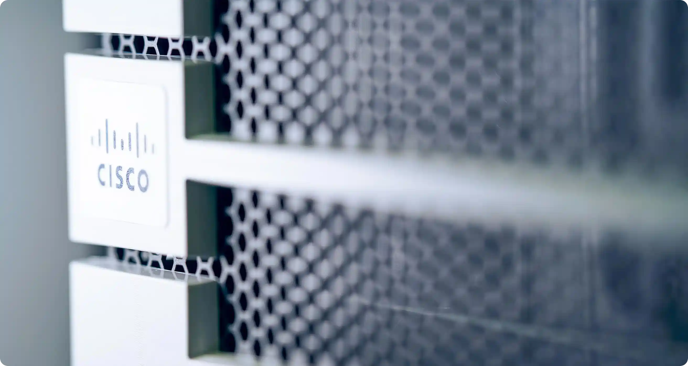

请访问原文链接：Cisco Unified Communications Manager (UCM, CUP, CUC, CER) 15 SU5 - 统一通信与协作 查看最新版。原创作品，转载请保留出处。
作者主页：sysin.org
Cisco Calling
Cisco Unified Communications Manager
企业呼叫领域的市场领导者，深受全球超过 3,000 万用户的信赖。

☎️ 持续创新
Cisco 持续投入 UCM，不断推动产品创新，确保其成为一个安全、可靠的平台，满足企业当前及未来的业务需求。
125+
自 UCM 14 以来的产品组合增强项目
400K
开发投入小时数
300+
安全更新
10+
未来十年的持续创新，包括 UCM 16 和 UCM 17
☎️ UCM 15
UCM 最新版本现已推出，安全性更高、灵活性更强，并为未来发展做好了准备。
Data Sheet: https://www.webex.com/content/dam/www/us/en/documents/pdf/ucm-15-data-sheet.pdf
迁移至核心 Linux 平台
更灵活的虚拟化管理程序选择
安全性与合规性增强
Webex 移动应用支持多线路功能
新增联邦认证
增强与 Microsoft Teams 的集成
Jabber 支持背景虚化和噪声消除
Webex App 支持 1080p 视频
云连接统一通信（Cloud Connected UC）
Cisco 驱动的 AI 创新
企业统一通信和协作
借助思科集成协作基础设施提供语音/视频通话、消息传送和移动服务，让员工随时随地使用任意设备进行协作。
思科统一通信管理器 (Unified CM) 为您提供易于扩展和管理且安全可靠的呼叫控制和会话管理解决方案。
特性和功能
统一通信

整合通信基础设施，让人员和团队能够通过思科统一通信管理器轻松通信 (sysin)。该解决方案融 IP 电话、高清视频、统一消息传送、即时消息和在线状态于一体。
增强移动性

推动工作空间转型，吸引并留住优秀人才，确保他们能够随时随地借助思科统一通信管理器工具高效工作，取得成功。该解决方案凭借丰富的功能，为移动员工和远程工作人员提供支持。
本地和全球

无论您经营的是区域性家族企业，还是全球知名企业，都需要选择一个能随组织需求的变化而不断扩展的解决方案。思科统一通信管理器不仅能满足中小企业的需求，也能为拥有多达 8 万名用户的大型企业提供支持。
开放且互通

Cisco Unified (CM) 支持行业标准，拥有丰富的网关产品，并建立由第三方集成和解决方案以及合作伙伴构成的庞大生态系统。从而帮助您随时随地以多种方式与任何人进行协作，并将协作功能嵌入业务部门的各种应用中。
安全且合规

Cisco Unified (CM) 支持最新身份验证、加密和通信协议 (sysin)。该解决方案通过了关键行业认证，可面向全球的金融服务业、制造业、零售业和政府部门客户提供数据和通信保护。
如何部署
统一通信管理器可采用以下方式提供：成套协作解决方案的组件；合作伙伴托管解决方案；或者直接安装在您自己的硬件上。
思科 Business Edition 6000

为员工人数多达 1000 人的组织选择一体化成套协作解决方案。
思科 Business Edition 7000

通过适用于大中型企业的模块化成套解决方案扩展企业通信。
在您的基础设施中部署 Cisco UCM

使用经过测试的参考配置和思科验证设计，将统一通信管理器部署到思科 UCS 和思科 HyperFlex 上。
选择托管协作解决方案

您可选择将统一通信解决方案作为由 Cisco Powered 合作伙伴提供的公共托管云服务或私有云服务。
下载地址
Unified Communications Manager Version 15 Solution Components
☎️ Unified Communications Manager Version 15
- Prime Collaboration Deployment Updates
- Recovery Software
- Unified Communications Manager Time Zone Updates
- Unified Communications Manager Updates
- Unified Communications Manager Virtual Machine Templates
- Unified Communications Manager/CallManager Device Packages
- Unified Communications Manager/CallManager Locale Installer
☎️ Unified Communications Manager IM & Presence Service 15
- Unified Presence Locale Installer
- Unified Presence OVA Templates
- Unified Presence Server (CUP) Updates
☎️ Unity Connection Version 15
- Unity Connection Locale Installer
- Unity Connection Recovery Software
- Unity Connection Updates
☎️ Emergency Responder 15
- Emergency Responder Updates
- Emergency Responder Virtual Machine Templates
Version History:
- Unified Communications Manager 15 18-Dec-2023
- Unified Communications Manager 15SU1 28-Mar-2024
- Unified Communications Manager 15SU2 01-Oct-2024
- Unified Communications Manager 15SU3 31-Jul-2025
- Unified Communications Manager 15SU4 04-Jan-2025
- Unified Communications Manager 15SU4a 04-Feb-2026
Now Available:
Unified Communications Manager 15SU5 14-Oct-2026 Download

文章用于推荐和分享优秀的软件产品及其相关技术，所有软件提供免费版或试用版。内容若侵犯了您的版权，请联系作者删除。如果您喜欢这篇文章，或者觉得它对您有所帮助，亦或发现有不当之处；欢迎发表评论，也欢迎分享这个网站，或者赞赏一下，谢谢！提示：捐赠或赞赏属于自愿赠予行为，提交后即表示您对作者的支持与认可。为避免误操作，请在确认前仔细检查金额，支付完成后将无法撤销或退还。
 支付宝赞赏
支付宝赞赏  微信赞赏
微信赞赏赞赏一下
敬请注册！点击 “登录” - “用户注册”（已知不支持 21.cn/189.cn 邮箱）。 请勿使用联合登录（已关闭）。